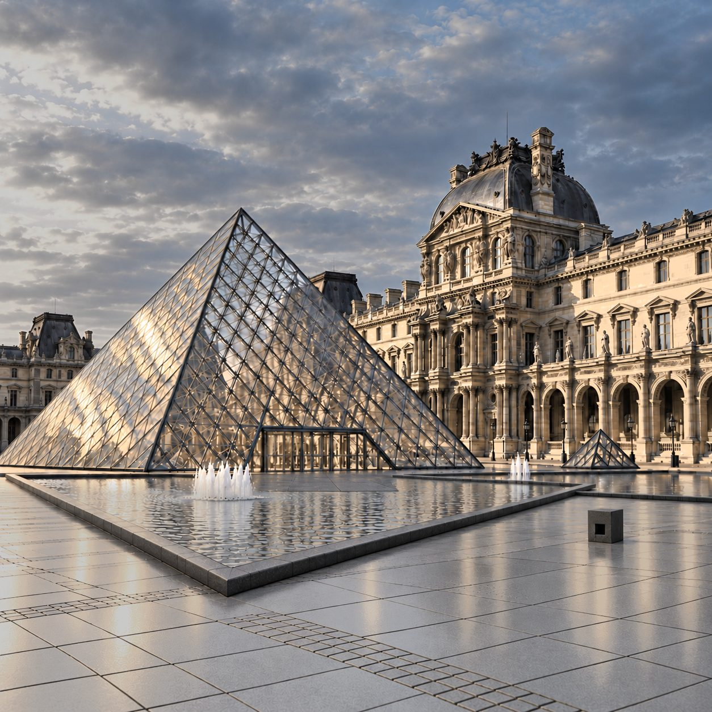
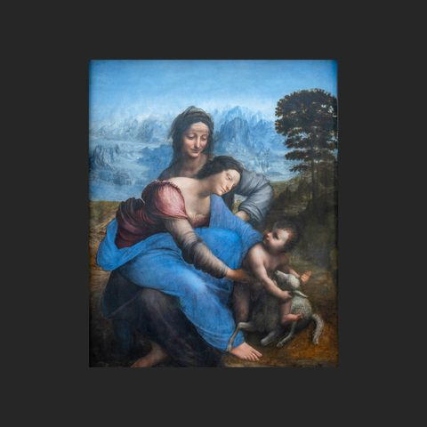
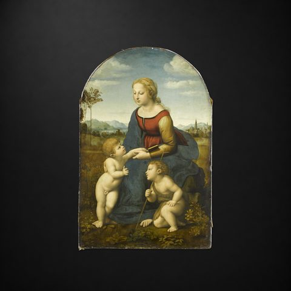
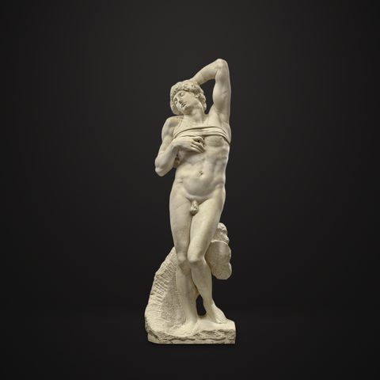
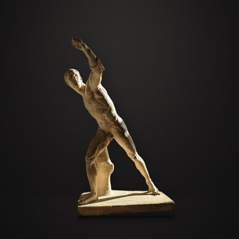
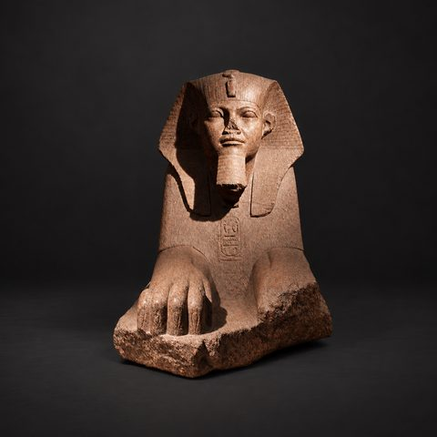
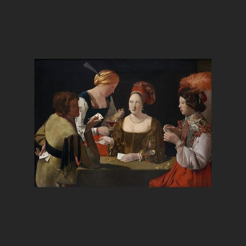
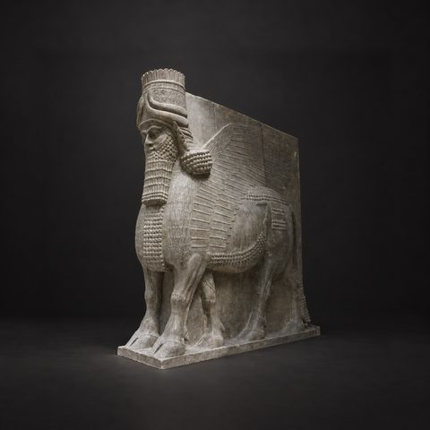

羅浮宮中文語音導覽
法國 · 巴黎 · Musée du Louvre
659 件館藏，每件都有中文解說
從《蒙娜麗莎》《米洛的維納斯》到薩莫色雷斯的勝利女神，羅浮宮的鎮館之寶，以及古埃及、古希臘、義大利繪畫展廳，每一件都有中文導覽。
- 普通話（台灣）
- 粵語（香港）
- 普通話（內地）
即將上架 App Store
App 即將上架，敬請期待。上架後免費下載，每座博物館單獨購買，一次購買永久使用。
解說包含這些名作
 蒙娜麗莎達文西
蒙娜麗莎達文西 薩莫色雷斯的勝利女神古希臘 · 希臘化時期
薩莫色雷斯的勝利女神古希臘 · 希臘化時期 米洛的維納斯古希臘 · 希臘化時期
米洛的維納斯古希臘 · 希臘化時期 自由引導人民德拉克洛瓦
自由引導人民德拉克洛瓦 拿破崙加冕大衛
拿破崙加冕大衛 梅杜薩之筏傑利柯
梅杜薩之筏傑利柯 大宮女安格爾
大宮女安格爾 荷拉斯兄弟之誓大衛
荷拉斯兄弟之誓大衛 岩窟聖母達文西
岩窟聖母達文西
聖母、聖嬰和聖安妮達文西
美麗的女園丁拉斐爾
垂死的奴隸米開朗基羅
波格賽角鬥士阿加西阿斯
塔尼斯獅身人面像古埃及
方塊A的作弊者喬治·德·拉圖爾 漢摩拉比法典古巴比倫
漢摩拉比法典古巴比倫
人首翼牛（薩爾貢二世宮殿）新亞述 · 薩爾貢二世時期 天文學家維梅爾
天文學家維梅爾 愚人船波希
愚人船波希 宰相羅蘭的聖母揚·范艾克
宰相羅蘭的聖母揚·范艾克……還有更多，共 659 件。
三種中文，聽你最熟悉的那一種
- 普通話（台灣）台灣口音的國語解說，繁體中文講稿。
- 粵語（香港）道地廣東話解說，講稿也以廣東話書寫，繁體中文。
- 普通話（內地）標準普通話解說，簡體中文講稿。
參觀小提醒
- 出發前在 Wi-Fi 下把羅浮宮整館導覽下載好，館內沒有網路也能用。
- 帶上耳機，在展廳裡不打擾別人。
- 看到有興趣的作品，舉起手機對準就能辨識；也可以在作品列表依名稱搜尋。